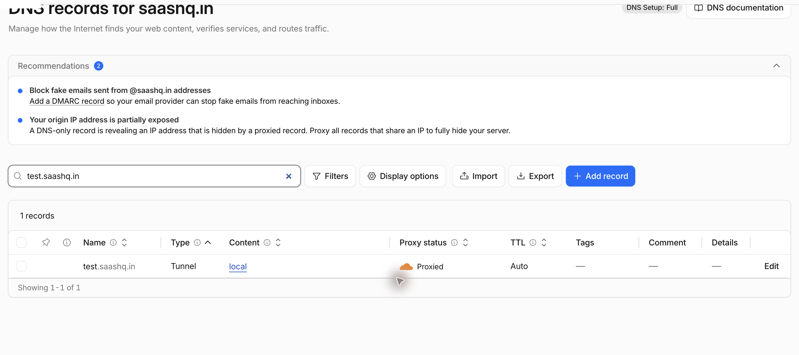
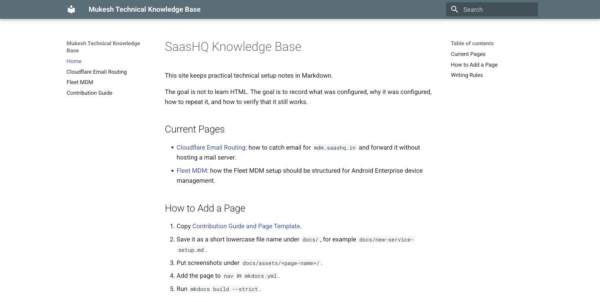

Cloudflare Tunnel Local Preview
Date: 2026-06-24
Status: Working
System: Cloudflare Tunnel, Cloudflare DNS, MkDocs
Sensitive data: Masked
Goal
Expose a website running on a local machine to the public internet without opening router ports or assigning a public IP address to the machine.
In this example, the local website runs at:
The public test URL is:
When to Use This
Use this when a developer or tester needs to quickly share a local website with another person, test a webhook callback, verify a mobile-device flow against a reachable URL, or preview a local documentation site from outside the machine.
This setup is temporary. The tunnel runs only while the cloudflared tunnel run command is active.
Final Configuration
- Local website:
http://127.0.0.1:8001/ - Public hostname:
test.saashq.in - Cloudflare Tunnel name:
local - DNS record type shown by Cloudflare:
Tunnel - Proxy status:
Proxied - Runtime mode: temporary command, not a macOS service

Prerequisites
- Domain is managed in Cloudflare DNS.
cloudflaredis installed on the local machine.- A Cloudflare Tunnel exists, or a new one can be created.
- The local website is already running.
For this test, the local MkDocs site was already running:
Expected result:

Install Cloudflared
On macOS with Homebrew:
Do not start the Homebrew service if the goal is only a temporary preview.
Create or Reuse a Tunnel
If a tunnel already exists, list it:
If a tunnel does not exist, authenticate and create one:
This creates tunnel credentials under:
Keep the credential JSON file private.
Add the Public Hostname
Create a DNS route from the public hostname to the tunnel.
If CLI authentication works:
If the CLI cannot create the route, use the Cloudflare dashboard:
- Open Cloudflare dashboard.
- Open the domain.
- Go to DNS records.
- Add a record for
test.saashq.in. - Point it to the tunnel named
local. - Keep proxy enabled.
The DNS table should show one record for test.saashq.in, with type Tunnel, content local, and proxy status Proxied.
Create a Temporary Config
Create a temporary config outside the repository:
cat > /tmp/saashq-test-tunnel.yml <<'EOF'
tunnel: <tunnel-id>
credentials-file: ~/.cloudflared/<tunnel-id>.json
ingress:
- hostname: test.saashq.in
service: http://127.0.0.1:8001
- service: http_status:404
EOF
Use the real tunnel ID and credential path from cloudflared tunnel list.
Run the Tunnel
Start the tunnel manually:
Successful startup shows registered tunnel connections and Cloudflare connectivity checks passing.
Leave this terminal running while the public preview is needed.
Verify the Public URL
Check DNS and HTTP from another terminal:
Expected result:
Open the public URL in a browser and confirm it shows the same local site.

Stop the Tunnel
Stop the running cloudflared command with Ctrl+C.
After stopping, the public hostname should no longer serve the local site:
Expected result when the tunnel is stopped:
Troubleshooting
| Symptom | Check | Fix |
|---|---|---|
Public URL returns 530 |
Is cloudflared tunnel run active? |
Start the tunnel again. |
Public URL returns 404 |
Does the temporary config include the hostname? | Add hostname: test.saashq.in under ingress. |
| Local URL fails | Is the local website running? | Start the local dev server first. |
| DNS route command fails | Is CLI auth valid? | Add the tunnel hostname from the Cloudflare dashboard instead. |
| Browser shows stale content | Is another site using the same hostname? | Check the Cloudflare DNS record and tunnel route. |
Maintenance Notes
- Keep this page focused on temporary tunnel previews.
- Keep tunnel credential files out of the repository.
- Keep screenshots redacted before publishing.
- Do not document personal Cloudflare account usernames or mailbox names.